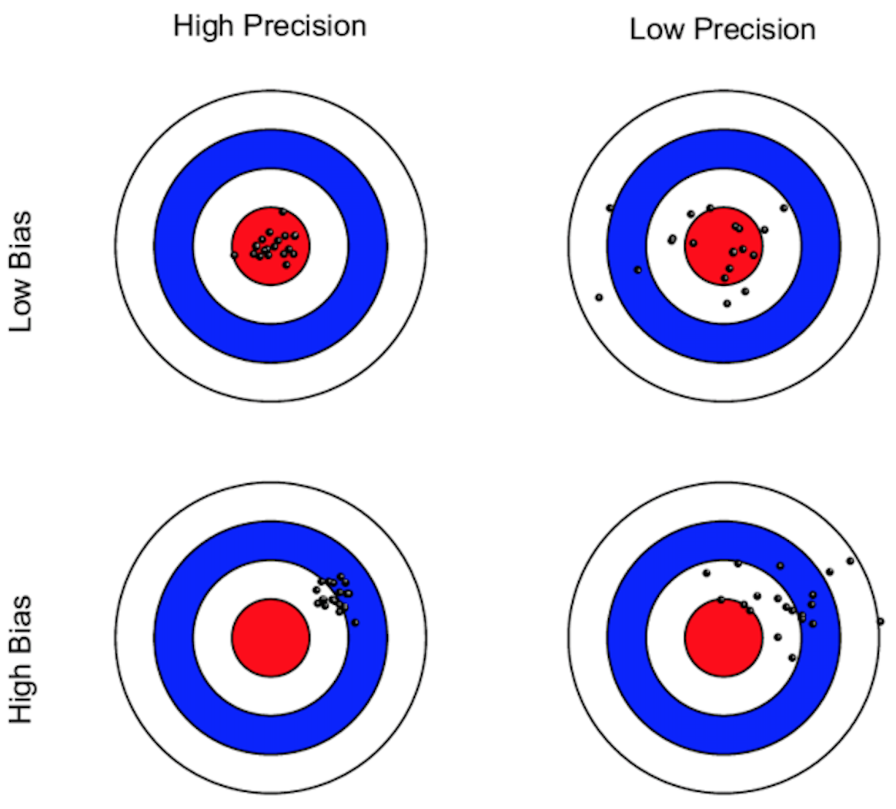
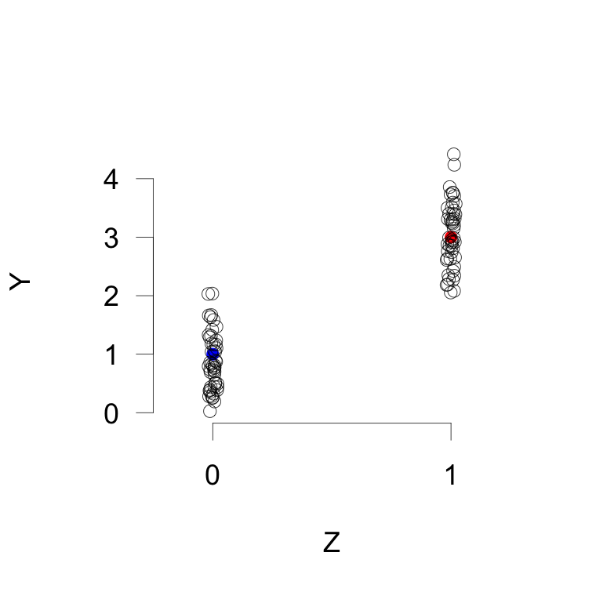
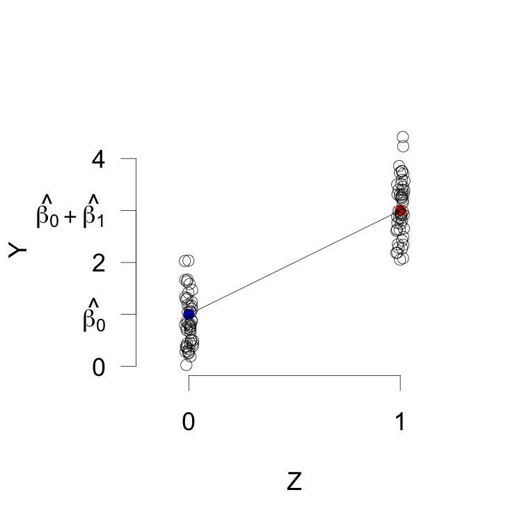
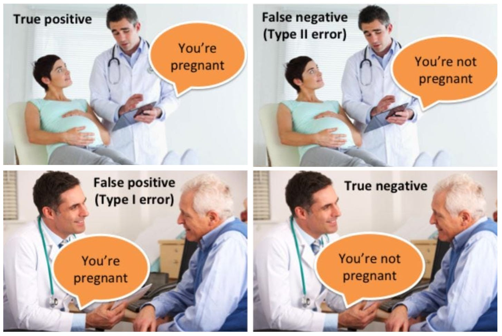
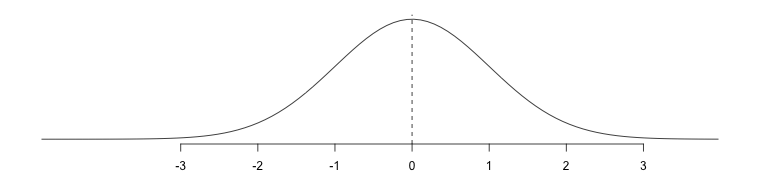
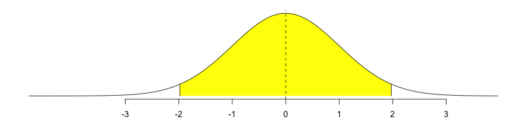
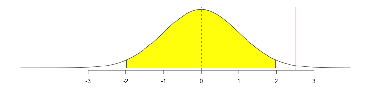
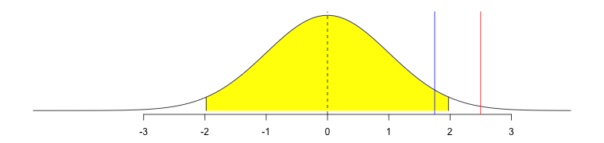
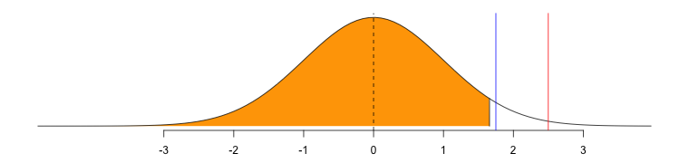
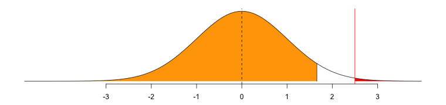

mean(Y[treatment==1]) - mean(Y[treatment==0])
library(estimatr)
difference_in_means(Y ~ treatment)7 Estimation 1
8.1 L’estimation et les tests d’hypothèses
- Le traitement a été assigné de façon aléatoire et nous avons mesuré les résultats.
- Nous utilisons maintenant ces données pour :
- Estimation : produire une estimation du véritable effet du traitement
- Test d’hypothèse : évaluer la cohérence des résultats avec l’absence d’effet
8.2 L’estimation
8.2.1 L’estimation
- Rappelez qu’il y a un vrai ATE, mais nous ne pouvons pas l’observer à cause du problème fondamental de l’inférence causale. C’est notre cible, notre paramètre.
- Par exemple, l’ATE.
- Nous utilisons nos données pour faire une supposition éclairée, notre estimation.
- \(\widehat{ATE}\)
- Si nous renouvelons l’expérience, différentes unités peuvent être assignées au traitement, et notre estimation sera probablement différente.
8.2.2 Estimateurs
- L’estimateur est comment on devine la valeur du paramètre à partir des données dont on dispose (les données observées).
- Il y a plusieurs estimateurs possibles pour le même paramètre.
- Nous présenterons plusieurs estimateurs couramment utilisés pour analyser des expériences.
8.2.3 Estimateurs
- En général, nous préférons les estimateurs qui sont :
- Non biaisés : si vous exécutez l’expérience plusieurs fois, l’estimation peut parfois être trop élevée ou trop faible, mais elle sera correcte en moyenne.
- Précis : les estimations ne varient pas beaucoup d’une exécution de l’expérience à l’autre.
- Le meilleur : non biaisé et précis.
8.2.4 Estimateurs

8.2.5 Un principe général : analysez comme vous randomisez
- Cela signifie suivre la conception de l’expérience.
- Comparez les groupes créés par l’assignation aléatoire.
8.2.6 Estimateur 1 : la différence des moyennes
- Nous avons une expérience simple :
- Assignation aléatoire au traitement ou au contrôle.
- Toutes les unités ont la même probabilité de recevoir le traitement.
- Notre paramètre est l’ATE.
- L’estimateur le plus simple de l’ATE est la différence des moyennes : soustrayez la moyenne des unités assignées au contrôle de la moyenne des unités assignées au traitement.
8.2.7 Estimateur 1 : la différence des moyennes

8.2.8 Estimateur 1 : la différence des moyennes
| Unit | \(Z_i\) | \(Y_i\) | \(Y_i(1)\) | \(Y_i(0)\) |
|---|---|---|---|---|
| a | 1 | 5 | 5 | |
| b | 1 | 4 | 4 | |
| c | 1 | 2 | 2 | |
| d | 1 | 1 | 1 | |
| e | 0 | 1 | 1 | |
| f | 0 | 1 | 1 | |
| g | 0 | 0 | 0 | |
| h | 0 | 2 | 2 |
\[\frac{5+4+2+1}{4} - \frac{1+1+0+2}{4} = 3 - 1 = 2\]
8.2.9 Estimateur 1 : la différence des moyennes
8.2.10 Estimateur 2 : la régression linéaire
\[Y_i = \beta_0 + \beta_1 Z_i + e_i\]
- Pour cette expérience simple, nous pouvons également utiliser la régression linéaire. Elle produira exactement la même estimation (\(\hat{\beta_1}\)) de l’ATE que l’estimateur de la différence des moyennes.
- \(\hat{\beta_0}\) est le résultat moyen des unités assignées au contrôle.
8.2.11 Estimateur 2 : la régression linéaire

\[Y_i = {\beta_0} + {\beta_1} Z_i + e_i\]
8.2.12 Estimateur 2 : la régression linéaire
lm(Y ~ treatment)8.3 Les tests d’hypothèses
8.3.1 Hypothèse : une femme est enceinte
8.3.2 La vérité : la femme est enceinte

8.3.3 Erreurs de type I et de type II
| Rejeter \(H_0\) | Ne pas rejeter \(H_0\) | |
|---|---|---|
| \(H_0\) vraie (aucun effet) | Erreur de type I (\(\alpha\)) | Correct |
| \(H_0\) fausse (effet existant) | Correct (puissance \(= 1-\beta\)) | Erreur de type II (\(\beta\)) |
- Erreur de type I (\(\alpha\)) : rejeter \(H_0\) alors que \(H_0\) est vraie — un faux positif.
- Erreur de type II (\(\beta\)) : ne pas rejeter \(H_0\) alors que \(H_0\) est fausse — un faux négatif.
- Puissance \(= 1 - \beta\) : probabilité de rejeter correctement \(H_0\) lorsqu’il y a un effet.
8.3.4 Les tests d’hypothèses
- Supposons qu’un médicament n’ait aucun effet sur la taille. Mais toutes les personnes de petite taille ont été assignées au médicament et les personnes de grande taille au contrôle.
- Si on utilise la différence de moyennes, on dirait que le médicament a rendu les gens plus petits !
8.3.5 Les tests d’hypothèses
- Avertissement : on peut obtenir une estimation non nulle même s’il n’y a aucun effet !
- Sommes-nous convaincus que notre estimation non nulle reflète un paramètre véritablement non nul (la vérité) ?
8.3.6 Les tests d’hypothèses
- Hypothèse : une affirmation sur le monde que nous évaluerons à l’aide de données.
- Une bonne hypothèse est spécifique et réfutable.
- Commencer par une hypothèse nulle, une affirmation que nous pourrions rejeter lorsque nous examinons les données. Nous utiliserons l’hypothèse nulle que le vrai ATE est 0.
- Mais rappelez-vous que nous pouvons obtenir un \(\widehat{ATE}\) différent de 0 par hasard.
8.3.7 Les tests d’hypothèses

- Distribution des \(\widehat{ATE}\) possibles si l’hypothèse nulle est vraie
8.3.8 Les tests d’hypothèses

- Régions de rejet (blanche) et de non-rejet (jaune) pour une hypothèse alternative bilatérale à \(\alpha=0{,}05\)
8.3.9 Les tests d’hypothèses
- \(\alpha\) est une valeur que vous choisissez / fixez avant le test d’hypothèse. Il s’agit souvent de 0,05 ou de 5 % dans les sciences sociales.
- La proportion \(\alpha\) de l’aire sous la courbe se trouve dans la région de rejet.
8.3.10 Les tests d’hypothèses

- \(\widehat{ATE}\) se situe dans la région de rejet → rejetez l’hypothèse nulle
8.3.11 Les tests d’hypothèses

- \(\widehat{ATE}\) se situe en dehors de la région de rejet → ne rejetez pas l’hypothèse nulle
8.3.12 Les tests d’hypothèses

- Régions de rejet et de non-rejet pour une hypothèse alternative unilatérale à \(\alpha=0{,}05\)
8.3.13 \(p\)-valeur

- \(p\)-valeur : pour un test d’hypothèse unilatéral, la probabilité de voir une statistique de test aussi grande ou plus grande que la statistique de test calculée à partir des données observées lorsque l’hypothèse nulle est vraie.
8.3.14 Les tests d’hypothèses avec la régression linéaire
- Il existe de nombreuses façons de tester des hypothèses. Nous allons utiliser l’approche la plus simple : la régression.
- Utiliser la régression linéaire pour calculer une \(p\)-valeur (test bilatéral).
8.3.15 Les tests d’hypothèses avec la régression linéaire
- Comparez cette \(p\)-valeur à \(\alpha\), une norme que nous avons fixée à l’avance.
- \(\alpha\) est la probabilité de faire l’erreur de rejeter l’hypothèse nulle alors que nous ne devrions pas le faire.
8.3.16 Les tests d’hypothèses avec la régression linéaire
- Si la \(p\)-valeur est plus petite ou égale au niveau \(\alpha\), nous rejetons l’hypothèse nulle d’aucun effet.
- Si la \(p\)-valeur est plus grande que le niveau \(\alpha\), nous ne parvenons pas à rejeter l’hypothèse nulle d’aucun effet.
- Rappel : nous n’acceptons pas l’hypothèse nulle.
8.3.17 Les tests d’hypothèses avec la régression linéaire
lm_robust(Energy ~ Coffee, data = df)| Model 1 | |
|---|---|
| (Intercept) | 0.77*** |
| (0.15) | |
| Coffee | 0.51* |
| (0.21) | |
| R2 | 0.06 |
| Adj. R2 | 0.05 |
| Num. obs. | 100 |
| RMSE | 1.04 |
| ***p < 0.001; **p < 0.01; *p < 0.05 | |
8.4 Ajustement des covariables
8.4.1 Estimateur : la régression linéaire avec des covariables
\[Y_i = \alpha_0 + \beta_1 Z_i + \gamma X_i + e_i\]
- Nous pouvons inclure une covariable pré-traitement \(X\) qui est prédictive de la variable de résultat dans notre modèle de régression.
- Considérez que \(X\) est fixé avant la randomisation. Par exemple : une mesure du résultat avant le traitement.
- Attention : cela peut biaiser nos estimations, mais améliorer leur précision.
8.4.2 Estimateur : la régression linéaire avec des covariables
\[Y_i = {\alpha_0} + {\beta_1} Z_i + {\gamma} X_i + e_i\]
- Le coefficient estimé sur la variable de traitement (\(\hat{\beta_1}\)) est encore notre \(\widehat{ATE}\).
- Le coefficient estimé de la covariable (\(\hat{\gamma}\)) n’est pas l’effet causal de cette variable.
8.4.3 Estimateur : la régression linéaire avec des covariables
lm_robust(Energy ~ Coffee + Sporty_Sportive, data = df)| Model 1 | |
|---|---|
| (Intercept) | 0.24 |
| (0.16) | |
| Coffee | 0.51** |
| (0.18) | |
| Sporty_Sportive | 1.05*** |
| (0.18) | |
| R2 | 0.30 |
| Adj. R2 | 0.29 |
| Num. obs. | 100 |
| RMSE | 0.90 |
| ***p < 0.001; **p < 0.01; *p < 0.05 | |
8.4.4 Estimateur : la régression linéaire avec des covariables
| Model 1 | |
|---|---|
| (Intercept) | 0.77*** |
| (0.15) | |
| Coffee | 0.51* |
| (0.21) | |
| R2 | 0.06 |
| Adj. R2 | 0.05 |
| Num. obs. | 100 |
| RMSE | 1.04 |
| ***p < 0.001; **p < 0.01; *p < 0.05 | |